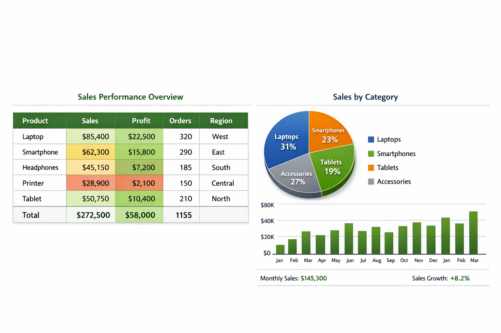

Full Excel project breakdown
This project demonstrates how Excel can be used to automate financial KPI reporting using PivotTables, Power Query, advanced formulas, and dynamic visuals. The tracker consolidates monthly financial data and produces automated KPI summaries for leadership.

Connected Excel to multiple monthly CSV files using Power Query. Applied transformations, merged tables, and automated refresh to eliminate manual data preparation.
Built KPI formulas using SUMIFS, XLOOKUP, INDEX/MATCH, and dynamic named ranges. Created automated metrics such as Revenue, Operating Margin, and Cost Variance.
Designed interactive PivotTables and charts to visualise trends across months, departments, and cost centres. Added slicers for dynamic filtering.
Applied colour‑coded rules to highlight performance against targets, making insights easy to interpret at a glance.
Outcome: Reduced manual reporting time by 50% and improved accuracy of monthly financial reports.